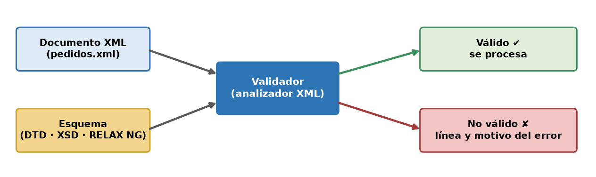
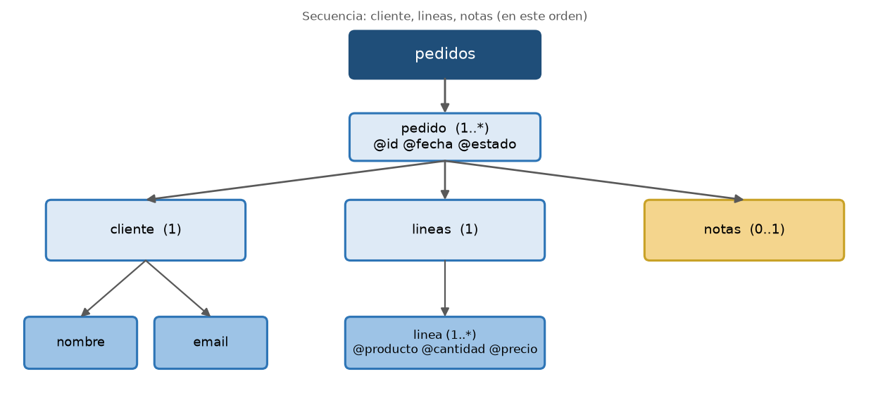

Inicio › UT4
Un documento bien formado cumple la sintaxis XML; uno válido además cumple las reglas de su esquema. Esta tabla viene de validar diez documentos con un error cada uno contra una DTD y un XSD (resultados obtenidos con libxml2).
¿Qué detecta cada tecnología?
| Error introducido | DTD | XSD |
|---|---|---|
| Falta un elemento obligatorio (cliente) | No válido | No válido |
| Orden incorrecto de los elementos | No válido | No válido |
| Falta un atributo obligatorio (fecha) | No válido | No válido |
| Valor fuera de la lista (estado) | No válido | No válido |
| Cantidad que no es un número | Válido | No válido |
| Cantidad por encima del máximo | Válido | No válido |
| Correo con formato incorrecto | Válido | No válido |
| Fecha inexistente | Válido | No válido |
| Identificador repetido | No válido | No válido |
| Elemento no declarado | No válido | No válido |
La DTD deja pasar los errores de tipo y de valor; el XSD los detecta todos.


Esquema de pedidos (XSD)
<?xml version="1.0" encoding="UTF-8"?>
<xs:schema xmlns:xs="http://www.w3.org/2001/XMLSchema">
<!-- Tipos simples propios -->
<xs:simpleType name="estadoTipo">
<xs:restriction base="xs:string">
<xs:enumeration value="pendiente"/>
<xs:enumeration value="enviado"/>
<xs:enumeration value="entregado"/>
</xs:restriction>
</xs:simpleType>
<xs:simpleType name="emailTipo">
<xs:restriction base="xs:string">
<xs:pattern value="[^@\s]+@[^@\s]+\.[a-z]{2,}"/>
</xs:restriction>
</xs:simpleType>
<xs:simpleType name="cantidadTipo">
<xs:restriction base="xs:positiveInteger">
<xs:maxInclusive value="100"/>
</xs:restriction>
</xs:simpleType>
<xs:simpleType name="precioTipo">
<xs:restriction base="xs:decimal">
<xs:minExclusive value="0"/>
<xs:fractionDigits value="2"/>
</xs:restriction>
</xs:simpleType>
<!-- Estructura -->
<xs:element name="pedidos">
<xs:complexType>
<xs:sequence>
<xs:element name="pedido" maxOccurs="unbounded">
<xs:complexType>
<xs:sequence>
<xs:element name="cliente">
<xs:complexType>
<xs:sequence>
<xs:element name="nombre" type="xs:string"/>
<xs:element name="email" type="emailTipo"/>
</xs:sequence>
</xs:complexType>
</xs:element>
<xs:element name="lineas">
<xs:complexType>
<xs:sequence>
<xs:element name="linea" maxOccurs="unbounded">
<xs:complexType>
<xs:attribute name="producto" type="xs:string" use="required"/>
<xs:attribute name="cantidad" type="cantidadTipo" use="required"/>
<xs:attribute name="precio" type="precioTipo" use="required"/>
</xs:complexType>
</xs:element>
</xs:sequence>
</xs:complexType>
</xs:element>
<xs:element name="notas" type="xs:string" minOccurs="0"/>
</xs:sequence>
<xs:attribute name="id" type="xs:ID" use="required"/>
<xs:attribute name="fecha" type="xs:date" use="required"/>
<xs:attribute name="estado" type="estadoTipo" default="pendiente"/>
</xs:complexType>
</xs:element>
</xs:sequence>
</xs:complexType>
</xs:element>
</xs:schema>La misma estructura en una DTD
<!ELEMENT pedidos (pedido+)>
<!ELEMENT pedido (cliente, lineas, notas?)>
<!ATTLIST pedido
id ID #REQUIRED
fecha CDATA #REQUIRED
estado (pendiente|enviado|entregado) "pendiente">
<!ELEMENT cliente (nombre, email)>
<!ELEMENT nombre (#PCDATA)>
<!ELEMENT email (#PCDATA)>
<!ELEMENT lineas (linea+)>
<!ELEMENT linea EMPTY>
<!ATTLIST linea
producto CDATA #REQUIRED
cantidad CDATA #REQUIRED
precio CDATA #REQUIRED>
<!ELEMENT notas (#PCDATA)>
Descargas
Para validar en tu equipo: xmllint --noout --schema pedidos_ut4.xsd tu_documento.xml (el ejemplo del temario usa otro conjunto de pedidos).